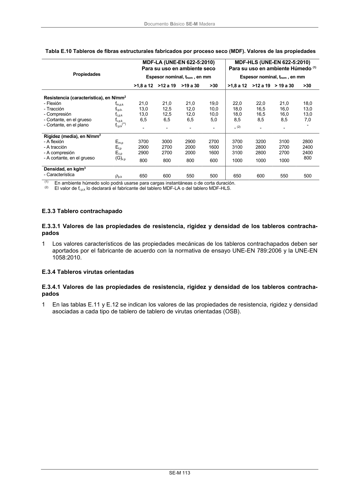

DB-SE-M · Fragmento de PDF p119 · versión 2019-12-20 · capa oficial
Formatos: JSON compacto · Markdown · PDF fuente
Ámbito del documento · texto del ámbito · documento y tablas
ID técnico a0204 · PDF pág. 119 · jerarquía no validada por persona · no es capítulo: sin_linea_de_encabezado · padre: raíz · literal original en el contenido: «pados»
pados 1 Los valores característicos de las propiedades mecánicas de los tableros contrachapados deben ser aportados por el fabricante de acuerdo con la normativa de ensayo UNE-EN 789:2006 y la UNE-EN 1058:2010.

PDF fuente redistribuible: copia fiel enlazada en esta página (SHA256 verificado).